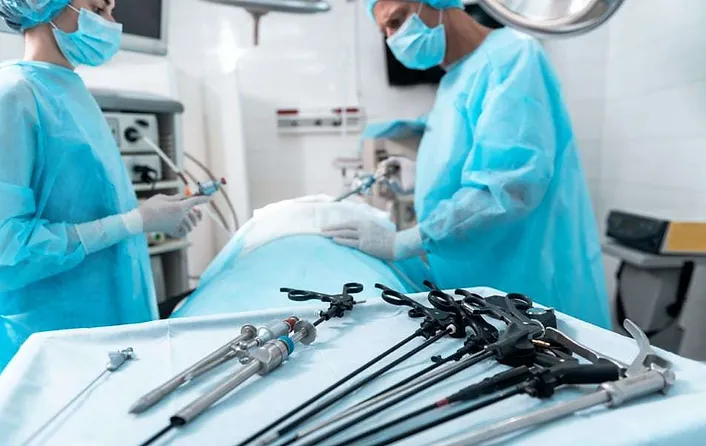

Laparoscopy
Laparoscopy serves a spectrum of purposes, from diagnostic exploration to intricate surgeries like appendectomies and gallbladder removals. With precision instruments guided by real-time visuals, our surgical team executes procedures with unparalleled accuracy. Patients experience less scarring, decreased pain, and shorter hospital stays, exemplifying our commitment to progressive and patient-friendly healthcare.
Incorporating laparoscopic advancements into our surgical repertoire reflects our dedication to optimizing patient outcomes. In the surgical department, we embrace laparoscopy as a transformative force, redefining traditional surgical approaches and contributing to a future where healthcare is both effective and compassionate.